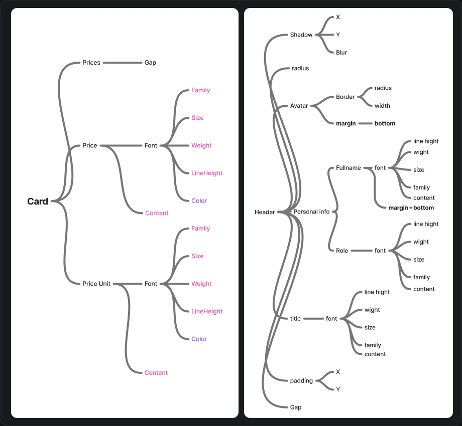
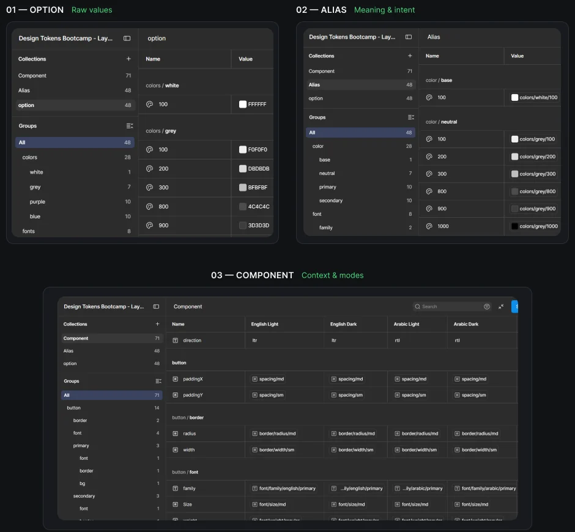
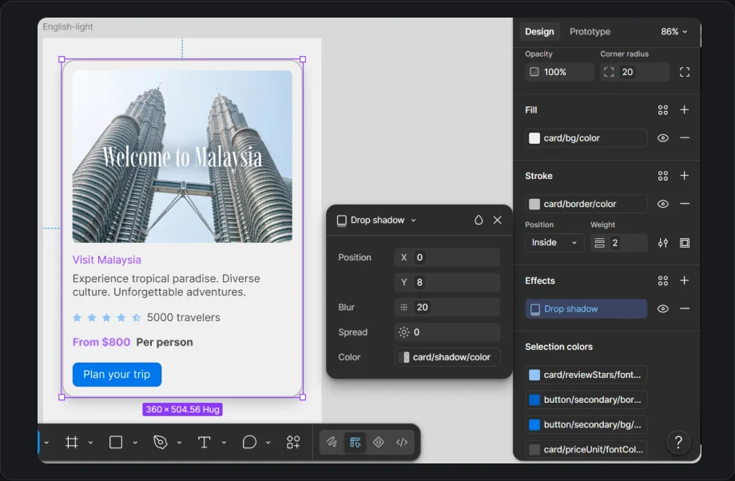

The idea in one minute
A design token is a named design decision. Instead of a button saying "my color is #7C4DFF", it says "my color is button/primary/bg", and the system decides what that means for each brand, language and theme.
The program was about designing that system rather than screens: plan how components relate, name decisions in layers, bind them to components, then hand the same source to developers. The final project, built as a team under the supervision of Osama Eldrieny, put it to the test: one set of components serving three brands, English and Arabic, and light and dark.
I started with relationships, not components
Before defining a single variable, I mapped how each component breaks down into properties and how those properties relate. A card isn't one thing: it has a price, a price unit and content, and each of those has its own font family, size, weight, line height and color.

Three layers, each with one job
Take one decision, the border color of a card, and follow it through the three layers.
Option the palette
Every raw value the system is allowed to use.
grey/200
Alias the meaning
Names the value by its purpose, not its color.
color/borderpoints togrey/200Component the usage
Says exactly where the decision is applied.
card/border/color
→ color/border
In light mode, color/border points to grey/200.

Binding tokens to components
Once tokens became variables, I bound them to every property of a component: fill, stroke, radius, text colors and even each value inside a drop shadow. The component stops storing colors and starts reading decisions.
Discover AlUla
Sandstone canyons, old towns and starry nights.
From $800 per person
Plan your trip
Try the system
This is the core of our final project, rebuilt live. The card below never changes: only the mode does. Three brands times two languages times two themes gives twelve contexts from one structure. Hover a row to see which part of the card it styles.
Interactive recreation of our final project
Mode:
| Component | Alias | Option |
|---|
From tokens to code
A system only scales if developers can use it. We exported Figma Variables to JSON, configured the token build for naming and structure, and consumed the result as CSS variables. The code below follows the mode you picked above.
- 1
Export
Figma Variables to JSON. References stay references.
- 2
Build
Each mode becomes a set of CSS variables.
- 3
Use
Components read variables, never raw values.
The card in Figma and the card in code read from the same source.
Takeaway
Map before you define. Mapping relationships first showed which values should be shared tokens and which belong to a single component.
Name for meaning, not for value. Alias names like color/neutral/100 let a brand change without touching a single component.
A system is real once code reads it. Exporting to CSS variables made Figma and code read from the same source. I now bring the same thinking to work, where I co-built a unified component library on Figma Variables.